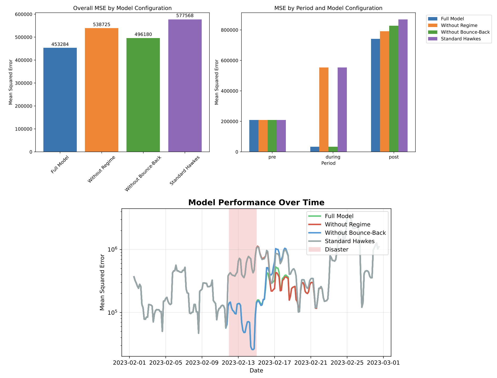

Modelling social mobility during natural disasters
Minh Kieu - University of Auckland
Alexis Comber - University of Leeds
Quang Thanh Bui - Vietnam National University
Nick Malleson - University of Leeds
Classical approaches in modelling human mobility during disasters
- Treat mobility events as independent
- Miss cascading effects between locations
- Can't capture recovery dynamics
- Ignore category-specific responses
Point Process
Probabilistic generative models for modelling sequences of events with complex temporal dependencies
$\lambda(t) = g(t)$

Classical Hawkes process
$\lambda(t) = \mu + \sum_{t_i} \alpha \cdot e^{-\beta(t-t_i)} $Excitation: the intensity increases by $\alpha$ whenever an event occurs and then exponentially decays towards the baseline level $\mu$

Our proposed Disaster-Aware Hawkes process
$\lambda(t, c) = \lambda_0(t, c, r) \cdot (1 + B(t, c)) + \sum_{(t_i, c_i) \in \mathcal{H}_t} \alpha(c_i \rightarrow c) \cdot w(t_i, d_i) \cdot \kappa(t - t_i)$+ Specific category: $c$
+ Excitation strength from category $c_i$ to category $c$: $\alpha(c_i \rightarrow c)$
+ Bounce-back effects: $B(t,c)$
+ Weight function based on dwell time $d_i$ at visit $i$: $w(t_i, d_i)$
+ Decay kernel that models how excitation diminishes over time: $\kappa(t - t_i)$
Parameter estimation using Maximum Likelihood Estimation ( L-BFGS-B)
Case Study: Cyclone Gabrielle, Auckland 2023
Perfect Natural Experiment
- New Zealand's most severe weather event in recent decades
- 130+ km/h winds across Auckland
- 225,000+ properties without power
- Major transport disruption from flooding
Our Dataset
5.85M mobility records from 111,539 devices
Ablation analysis
Discovering hidden cascade effects
Recovery Intervention Strategies
Disaster simulation
Conclusion
Compared to a standard Hawkes process, our proposed Disaster-aware Hawkes process
regime-switching baselines,
category-specific excitation components,
and post-disaster bounce-back effects
Limitations
Potential data sampling bias
Only one disaster
More spatial elements needed
Modelling social mobility during natural disasters
Thank you!
Questions?
Lab website:
https://transportanalytics.nz